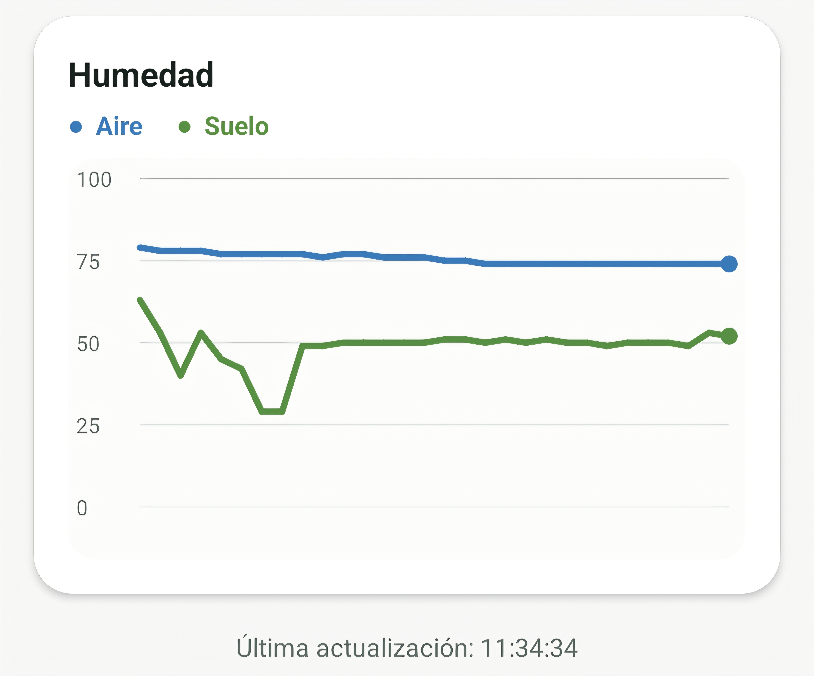
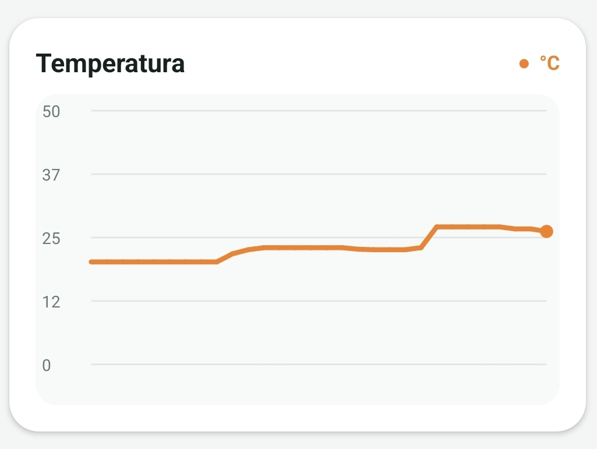

Revolución Agrícola con AgroNode
Monitoreo inteligente y predictivo de plagas. Diseñado para combatir el pulgón mediante análisis microclimático diferencial de bajo costo.
Explorar EcosistemaCaracterísticas Destacadas
Análisis de Gradiente Térmico
Monitorea variaciones climáticas milimétricas entre diferentes alturas o zonas de la planta. Los pulgones eligen sectores específicos basados en décimas de grado Celsius; AgroNode localiza estos focos antes de que se propague la plaga.

Estrés Hídrico Focalizado
Las raíces secas debilitan las defensas naturales del cultivo, atrayendo colonias enteras de áfidos. Gracias a los sensores distribuidos de forma diferencial, el sistema identifica qué hileras específicas requieren riego urgente.

Flujo de Trabajo del Sistema
Captura de Datos
Los sensores leen el microclima local y el satélite envía su telemetría diferencial al AgroNode Central.
Procesamiento
El ESP32 empaqueta las lecturas térmicas e hídricas en una cadena JSON optimizada para bajo ancho de banda.
Análisis de IA
Subes la foto desde tu teléfono; nuestro sistema cruza la imagen con los datos de las hileras de sensores para predecir brotes.
Lleva tu cultivo al siguiente nivel
Descubre cómo AgroNode puede ayudarte a monitorear las condiciones de tus cultivos, detectar riesgos y tomar decisiones agrícolas de manera más precisa.